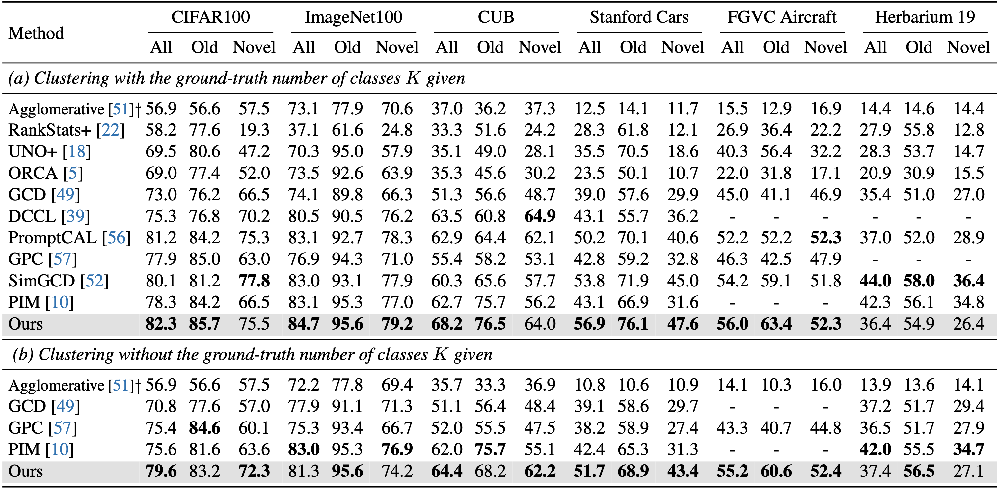
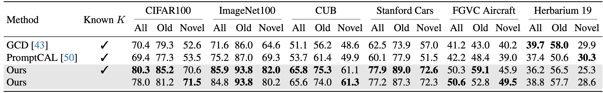
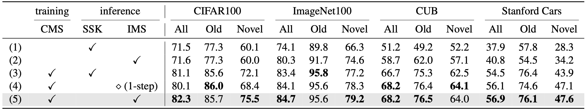

Preliminaries
Methods
Learning framework: Contrastive Mean-Shift learning (CMS)

Validation: Estimating the number of clusters
Inference: Iterative Mean-Shift (IMS)
Experiments
Evaluation on GCD
Comparison with the state of the arts on GCD using DINO-ViT-B/16, evaluated with or without the ground-truth class number K for clustering.  Comparison with the state of the arts on GCD using CLIP-ViT-B/16, evaluated with or without the ground-truth class number K for clustering.
Ablation study
 Effectiveness of each component of our method. SSK denotes semi-supervised k-means clustering and IMS denotes iterative mean-shift.Qualitative results
 kNN retrieved images of the initial embedding $\boldsymbol{v}$ and mean-shifted embedding $\boldsymbol{z}$ on CUB-200-2011.
Green denotes the correct class and red an incorrect class.
kNN retrieved images of the initial embedding $\boldsymbol{v}$ and mean-shifted embedding $\boldsymbol{z}$ on CUB-200-2011.
Green denotes the correct class and red an incorrect class.
Citation
@inproceedings{choi2024contrastive,
title={Contrastive Mean-Shift Learning for Generalized Category Discovery},
author={Choi, Sua and Kang, Dahyun and Cho, Minsu},
booktitle={Proceedings of the IEEE/CVF Conference on Computer Vision and Pattern Recognition},
year={2024}
}